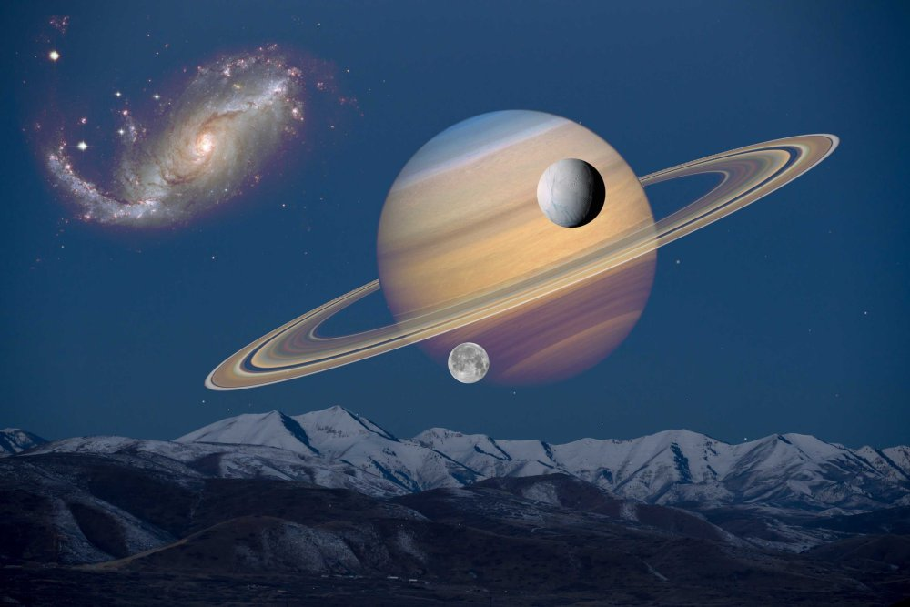
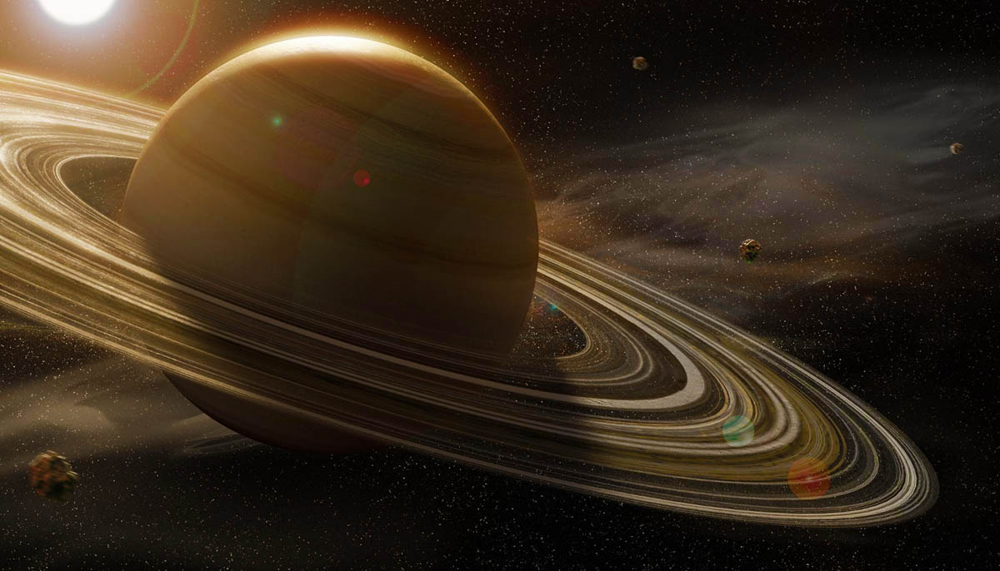
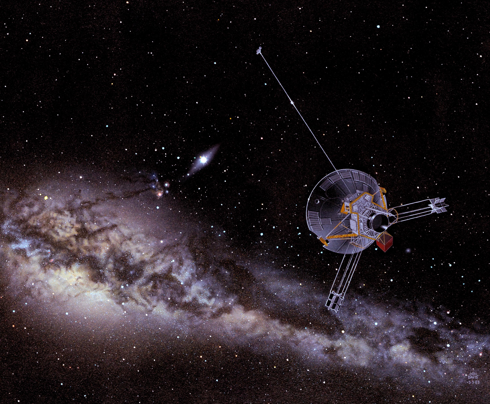
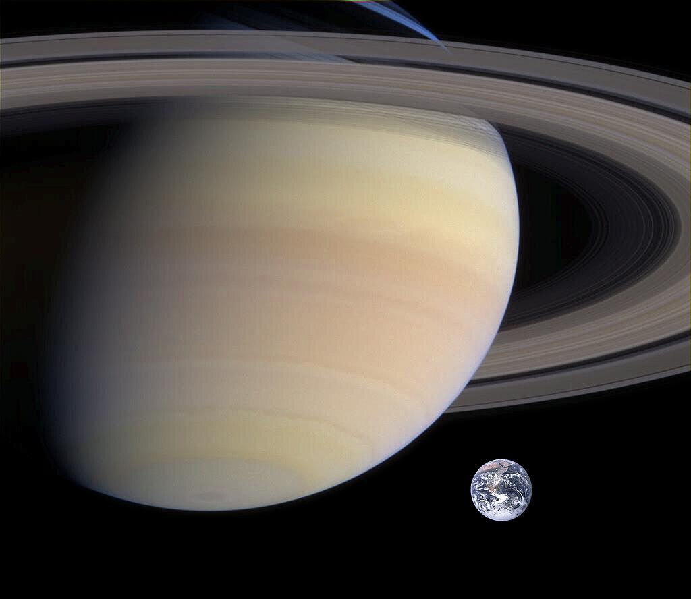
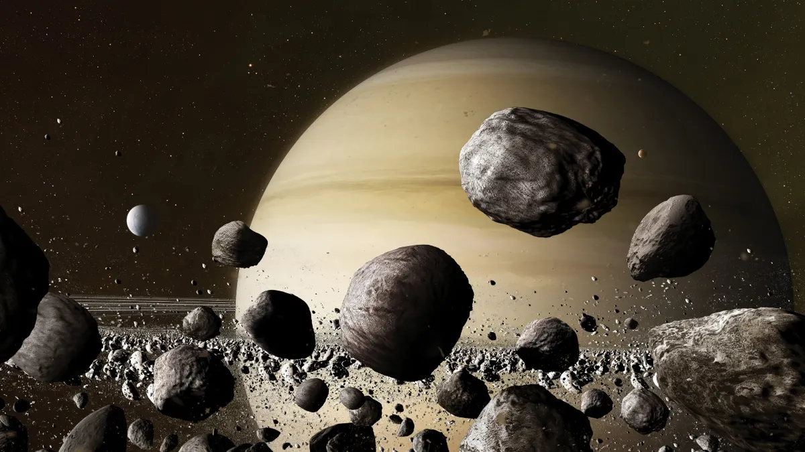

Сатурн
Сатурн - шоста планета за віддаленістю від Сонця і друга за розмірами планета в Сонячній системі після Юпітера. Сатурн класифікується як газова планета-гігант. Сатурн названо на честь римського бога землеробства.

В основному Сатурн складається з водню, з домішками гелію та слідами води, метану, аміаку та важких елементів. Внутрішня область є відносно невеликим ядром із заліза, нікелю і льоду, покрите тонким шаром металевого водню і газоподібним зовнішнім шаром. Зовнішня атмосфера планети здається з космосу спокійною та однорідною, хоча іноді на ній з'являються довготривалі утворення. Швидкість вітру на Сатурні може досягати місцями 1800 км/год, що значно більше, ніж Юпітері. Сатурн має планетарне магнітне поле, що займає проміжне положення по напруженості між магнітним полем Землі і потужним полем Юпітера. Магнітне поле Сатурна тягнеться на 1 000 000 кілометрів у напрямку Сонця. Ударна хвиля була зафіксована «Вояджером-1» на відстані 26,2 радіуса Сатурна від самої планети, магнітопауза розташована на відстані 22,9 радіуса.
Сатурн має помітну систему кілець, що складається головним чином з частинок льоду, меншої кількості важких елементів і пилу. Навколо планети звертається 146 відомих зараз супутника. Титан - найбільший з них, а також другий за розмірами супутник у Сонячній системі (після супутника Юпітера, Ганімеда), який перевершує за своїми розмірами Меркурій і володіє єдиною серед супутників планет Сонячної системи щільною атмосферою, а також метановими морями та озерами.
Астрономічні харакетристики
Середня відстань між Сатурном та Сонцем становить 1430 млн км (9,58 а.о.). Рухаючись із середньою швидкістю 9,69 км/с, Сатурн звертається навколо Сонця за 10759 діб (приблизно 29,5 років). Відстань від Сатурна до Землі змінюється в межах від 1195 (8,0 а.о.) до 1660 (11,1 а.е.) млн км, середня відстань під час їхнього протистояння близько 1280 млн км. Сатурн та Юпітер перебувають майже в точному резонансі 2:5. Оскільки ексцентриситет орбіти Сатурна 0,056, то різниця відстані до Сонця в перигелії та афелії становить 162 млн км.
Як тривалість обороту Сатурна навколо осі прийнята величина 10 годин, 34 хвилини та 13 секунд. Сатурн — єдина планета, у якої осьова швидкість обертання на екваторі більша за орбітальну швидкість обертання (9,87 км/сек і 9,69 км/сек відповідно).
Теорія виникнення
Походження Сатурна (як і Юпітера) пояснюють дві основні гіпотези. Згідно з гіпотезою «контракції», схожість складу Сатурна із Сонцем у тому, що у обох небесних тіл є велика частка водню, і, як наслідок, малу щільність можна пояснити тим, що в процесі формування планет на ранніх стадіях розвитку Сонячної системи у газопиловому диску утворилися потужні «згущення», що дали початок планетам, тобто Сонце і планети формувалися таким чином. Тим не менш, ця гіпотеза не може пояснити відмінності складу Сатурна та Сонця.

Гіпотеза «акреції» свідчить, що процес утворення Сатурна відбувався у два етапи. Спочатку протягом 200 мільйонів років відбувався процес формування твердих щільних тіл, на кшталт планет земної групи. Під час цього етапу з області Юпітера та Сатурна дисипувала частина газу, що потім вплинуло на різницю у хімічному складі Сатурна та Сонця. Потім почався другий етап, коли найбільші тіла досягли подвоєної маси Землі. Протягом кількох сотень тисяч років тривав процес акреції газу на ці тіла з первинної протопланетної хмари. На другому етапі температура зовнішніх шарів Сатурну досягала 2000 °C.
Дослідження Сатурну
Спочатку сприйнятий як три окремих об'єкти через телескоп Галілея на початку XVII століття, Сатурн пізніше був розкритий як планета з кільцями завдяки дослідженням Християна Гюйгенса у 1659 році. У наступні роки вчені виявили багато супутників цієї гігантської газової планети. Серед них — найбільший Титан, який був відкритий Гюйгенсом. Кассіні також зробив свій внесок у вивчення Сатурна та його оточення.
Космічні місії, такі як "Піонер-11", "Вояджер-1" і "Вояджер-2", а потім "Кассіні-Гюйгенс", надали цінні дані про планету, її кільця і супутників. Дослідження дозволили нам дізнатися про структуру кільцевої системи, атмосферу та магнітосферу Сатурна, а також описати поверхню його супутників. Серед значних відкриттів було виявлено озера вуглеводнів на Титані та гейзери на Енцеладі. Такі дослідження дали вченим унікальну перспективу на розуміння цієї захоплюючої планети та її системи.
Кільця Сатурну
Сьогодні відомо, що у всіх чотирьох газових гігантів є кільця, але у Сатурна вони найпомітніші. Кільця розташовані під кутом приблизно 28 ° до площини екліптики. Тому із Землі залежно від взаємного розташування планет вони виглядають по-різному, змінюється їх так зване «розкриття» — від максимального, коли видно всю їх ширину в площині, до мінімальної, дуже тонкої смужки, коли ця площина видно «з ребра». Як припускав ще Гюйгенс, кільця не є суцільним твердим тілом, а складаються з мільярдів найдрібніших частинок, що знаходяться на навколопланетній орбіті. Це було доведено спектрометричними спостереженнями А. А. Білопольського в Пулковській обсерваторії та двома іншими вченими у 1895—1896 роках.
Існує три основні кільця та четверте – більш тонке. Всі разом вони відбивають більше світла, ніж диск Сатурна. Три основні кільця прийнято позначати першими літерами латинського алфавіту. Кільце В - центральне, найширше і яскраве, воно відокремлюється від зовнішнього кільця А щілиною Кассіні шириною майже 4000 км, в якій знаходяться найтонші, майже прозорі кільця. Усередині кільця А є тонка щілина, яка називається розділовою смугою Енке. Кільце С, що знаходиться ще ближче до планети, ніж В, майже прозоре
Кільця Сатурна дуже тонкі. При діаметрі близько 250 000 км їхня товщина не досягає і кілометра (хоча існують на поверхні кілець і своєрідні гори). Незважаючи на значний вигляд, кількість речовини, що становить кільця, вкрай незначна. Якби його зібрати в моноліт, його діаметр не перевищив би 100 км. На зображеннях, отриманих зондами, видно, що насправді кільця утворені з тисяч кілець, що чергуються з щілинами; картина нагадує доріжки грамплатівок. Частинки, з яких складаються кільця, мають розмір від 1 см до 10 метрів. За складом вони на 93% складаються з льоду з незначними домішками (які можуть включати сополімери, що утворюються під дією сонячного випромінювання, і силікати) і на 7% з вуглецю